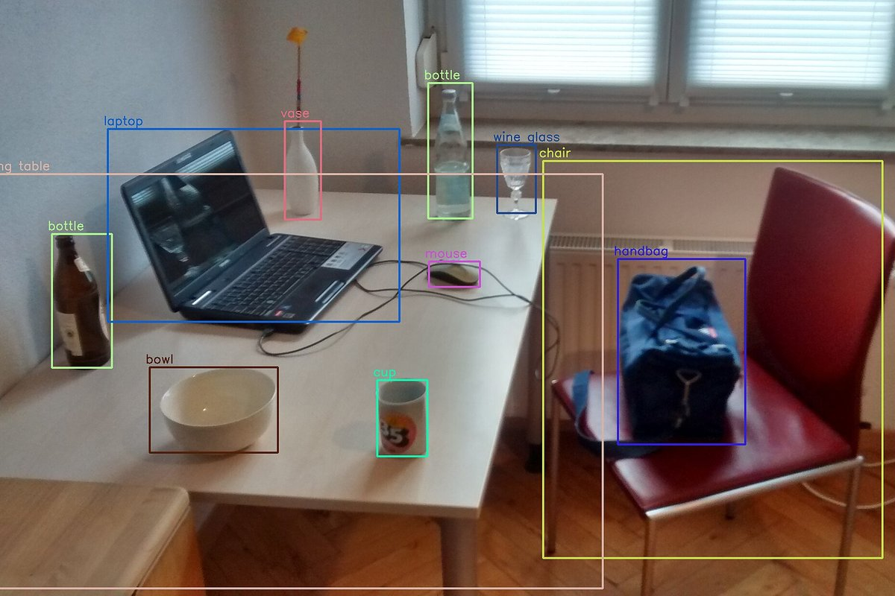

Computer Vision / ML - Detection, Segmentation and Classification
Computer-vision and machine-learning projects for real image and video tasks: finding objects, outlining regions, naming what is in a picture, and reasoning about what the camera sees. Each project is a trained model with its data pipeline, evaluation and inference code.
Keywords

1. Introduction
Most of my applied work starts with a camera or a scanned image and a question about it: what is here, where is it, and what kind is it. This collection holds the models that answer those questions on real data: detectors that draw boxes, segmenters that outline regions pixel by pixel, classifiers that name the picture, and the training, evaluation and inference code around each of them.
2. Goal
Goal
- Train detection, segmentation and classification models on real, imperfect image data and measure them on held-out sets.
- Keep the full pipeline for each model: data preparation, training, evaluation and inference, so a result can be reproduced.
- Package inference so a model can be called from a service or another program, not only from a notebook.
3. Code and details on GitHub
The main project and its technical details are uploaded to GitHub, so please refer to the repository to understand the work in detail.
GitHub: https://github.com/Laudarisd/Machine-Learning-Projects
Computer Vision / ML - Detection, Segmentation, Classification
실제 이미지와 영상 작업을 위한 Computer Vision과 Machine Learning 프로젝트예요. 객체를 찾고, 영역을 그리고, 사진에 무엇이 있는지 이름을 붙이고, 카메라가 보는 것을 추론해요. 프로젝트마다 학습된 모델과 데이터 파이프라인, 평가, 추론 코드가 있어요.
키워드
1. 소개
제가 한 응용 작업 대부분은 카메라나 스캔 이미지에서, 그리고 그에 대한 질문에서 시작해요. 여기 무엇이 있는지, 어디에 있는지, 어떤 종류인지요. 이 모음에는 그 질문에 실제 데이터로 답하는 모델들이 있어요. 박스를 그리는 Detector, 픽셀 단위로 영역을 그리는 Segmenter, 사진에 이름을 붙이는 Classifier, 그리고 각각의 학습·평가·추론 코드예요.
2. 목표
목표
- 실제의, 완벽하지 않은 이미지 데이터로 Detection, Segmentation, Classification 모델을 학습하고 따로 둔 데이터로 측정해요.
- 모델마다 데이터 준비, 학습, 평가, 추론까지 전체 파이프라인을 남겨서 결과를 다시 만들 수 있게 해요.
- 노트북에서만이 아니라 서비스나 다른 프로그램에서 모델을 부를 수 있게 추론을 패키징해요.
3. 코드와 자세한 내용은 GitHub에
메인 프로젝트와 기술적인 세부 내용은 GitHub에 올려 두었어요. 작업을 자세히 이해하시려면 저장소를 참고해 주세요.
GitHub: https://github.com/Laudarisd/Machine-Learning-Projects